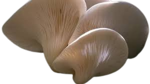
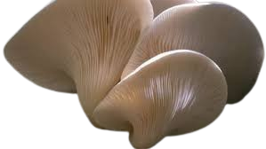

Descripción morfológica
Omphalotus nidiformis, llamado "hongo nido de pájaro" o "hongo fantasma australiano", es una especie bioluminiscente de la familia Omphalotaceae. Sus cuerpos fructíferos presentan sombreros en forma de embudo (5-25 cm de diámetro) con márgenes enrollados, de color blanco cremoso a amarillo pálido con tonos azulados. Las láminas son decurrentes y estrechas, emitiendo una luminiscencia verde fantasmal (520-530 nm de longitud de onda) en condiciones de oscuridad total. El pie es excéntrico y a menudo curvado, con base bulbosa.
Características distintivas
- Bioluminiscencia: Emite luz mediante la enzima luciferasa, especialmente intensa en las láminas (visible hasta 20 metros en noches oscuras).
- Estructura: Crece en densos grupos imbricados que recuerdan nidos de aves (de ahí "nidiformis").
- Esporas: Blancas en masa, elipsoidales, de 5-7 × 3.5-5 µm con superficie lisa.
- Toxicidad: Contiene illudinas, toxinas que provocan severos trastornos gastrointestinales.
Distribución y hábitat
Endémico de Australia y Tasmania, crece en bosques de eucaliptos (Eucalyptus spp.) y árboles nativos como las acacias. Frecuente en jardines urbanos con árboles maduros en Melbourne y Sídney. Coloniza tocones y raíces muertas, indicando madera en descomposición avanzada. Aparece después de lluvias otoñales e invernales (mayo-agosto en el hemisferio sur), formando espectaculares "anillos de luz" nocturnos.
Condiciones ecológicas
- Sustrato: Madera dura en descomposición, especialmente de árboles nativos australianos.
- Clima: Prefiere temperaturas entre 10-18°C y humedad relativa >80%.
- Asociaciones: A menudo coexiste con Armillaria luteobubalina en mismos troncos.
Ciclo de vida y bioquímica
Hongo saprótrofo que forma micelio rizomórfico blanco en la madera muerta. La bioluminiscencia depende de: 1) una luciferina específica (3-hidroxihispidina), 2) oxígeno molecular, y 3) pH ácido (4.5-5.5). La emisión lumínica sigue un ritmo circadiano, alcanzando su máximo entre las 22:00 y 02:00 horas. Las toxinas illudinas (compuestos sesquiterpénicos) actúan como defensa química contra insectos y mamíferos herbívoros.
Etapas clave
- Colonización: El micelio penetra la madera mediante enzimas ligninolíticas.
- Fructificación: Los primordios emergen tras 3-5 días de lluvias continuas.
- Maduración: Los cuerpos fructíferos completan su desarrollo en 48-72 horas.
Importancia ecológica y aplicaciones
- 🦉 Atracción de dispersores: La luz atrae insectos nocturnos que transportan esporas.
- 🧫 Investigación médica: Las illudinas se estudian por su potencial antitumoral.
- 🌌 Turismo científico: Atractivo clave en tours de bioluminiscencia en Tasmania.
- ⚠️ Toxicología: Caso de estudio en envenenamientos por hongos en Australia.
Datos fascinantes
- Historia: Documentado por primera vez en 1859 por el micólogo Miles Berkeley.
- Leyendas aborígenes: Los pueblos Gunai lo llamaban "corposant", asociándolo con espíritus ancestrales.
- Eficiencia lumínica: 10 veces más brillante que Neonothopanus gardneri.
- Arte natural: Usado en instalaciones artísticas de "bio-iluminación" en Sídney.
Precauciones y conservación
Peligros: Causa el 38% de intoxicaciones por hongos en Australia. Síntomas aparecen a los 30-120 minutos post-ingesta:
- Vómitos profusos y diarrea acuosa
- Deshidratación severa
- Posible daño hepático en niños
Medidas de protección
- No recolectar hongos blancos que crezcan en madera.
- Educar a inmigrantes (confunden con setas comestibles asiáticas).
- Preservar árboles viejos en parques urbanos como hábitat crítico.
Técnicas de observación responsable
- Horario óptimo: 2-3 horas después del anochecer.
- Condiciones: Noches sin luna con humedad ambiental alta.
- Fotografía: Usar trípode con exposiciones de 15-30 segundos (ISO 800-1600).